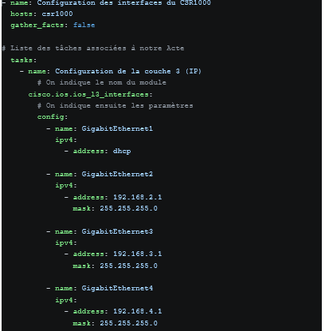
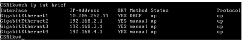
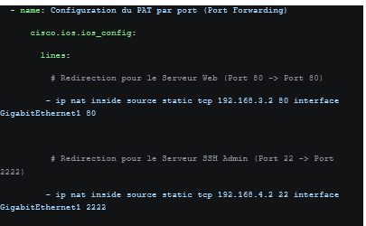

Outils DevOps : Infrastructure as Code avec Ansible
Introduction : Ce projet pratique vise à mettre en œuvre une approche DevOps (Infrastructure as Code) via Ansible. L'objectif était de remplacer la configuration manuelle (CLI) par des "Playbooks" automatisés pour provisionner un routeur Cisco CSR1000v et un serveur web Debian.
🎯 Apprentissages Critiques :
-
Compétence ROM1 : Gérer les infrastructures opérateurs
• AC24.05ROM : Automatiser la gestion des équipements réseaux -
Compétence RT3 : Créer des outils informatiques
• AC23.01 : Automatiser l'administration système avec des scripts -
Compétence RT1 : Administrer les réseaux
• AC21.04 : Déployer des services réseaux avancés (DHCP, NAT/PAT)
1. Description du projet
À l'aide de l'IDE Visual Studio Code et des extensions Remote-SSH, j'ai développé des playbooks YAML exploitant les modules réseau Cisco (cisco.ios.ios_l3_interfaces, cisco.ios.ios_config). L'infrastructure automatisée comprend :
- Plan d'adressage IP : Déploiement automatisé d'un client DHCP sur l'interface WAN et d'adresses IP statiques sur 3 interfaces LAN.
- Service DHCP : Configuration du routeur Cisco en tant que serveur DHCP pour le LAN Entreprise, en garantissant l'idempotence des tâches Ansible.
- Routage & NAT Dynamique (PAT) : Utilisation de boucles (
loop) dans Ansible pour appliquer dynamiquement une ACL et la fonction NAT sur de multiples interfaces. - Redirection de ports (Port Forwarding) : Configuration de règles NAT statiques pour exposer le serveur Web interne et le serveur d'administration SSH.
2. Présentation et justification des résultats
L'exécution des playbooks via la commande ansible-playbook a permis de provisionner le réseau et les services de bout en bout sans aucune intervention manuelle directe sur les équipements.

Preuve 1 : Script de déploiement des adresses IP et de l'interface WAN en DHCP.

Preuve 2 : Automatisation du serveur DHCP avec suppression préalable pour garantir l'idempotence.

Preuve 3 : Configuration dynamique du PAT (surcharge et redirection de ports) à l'aide de boucles.
3. Conclusion & Analyse Réflexive
📊 Auto-évaluation sur les Apprentissages Critiques :
Les AC24.05ROM et AC23.01 sont pleinement validés. J'ai acquis la logique "Infrastructure as Code", capable de scripter l'état désiré d'une machine (Cisco ou Linux) et de gérer des configurations massives en limitant les erreurs humaines.
🧠 Analyse Réflexive (Résolution de problèmes) :
L'automatisation exige une rigueur syntaxique absolue, comme m'ont prouvé les différentes erreurs rencontrées :
1. Évolution des modules Ansible : Lors de la configuration des IPs, j'ai tenté d'utiliser l'attribut mask séparément. Le playbook a échoué car la version actuelle du module cisco.ios.ios_l3_interfaces exige la notation CIDR (ex: 192.168.2.1/24). La lecture de la documentation m'a permis d'adapter le code.
2. Le concept d'idempotence : Le module ios_config ne gère pas nativement l'état des pools DHCP. Ansible crashait lors d'une seconde exécution car Cisco refusait de recréer un pool existant. Pour rendre mon script idempotent, j'ai ajouté une tâche préalable supprimant le pool existant.
3. Logique réseau (Port Forwarding) : J'ai initialement perdu l'accès SSH à ma machine d'administration car j'avais inversé les ports (2222 vers 22) dans ma règle NAT statique. Cette erreur formatrice m'a rappelé qu'Ansible applique aveuglément ce qu'on lui dicte : l'outil ne remplace pas l'expertise réseau de l'administrateur.